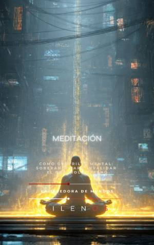

Illuminati
MEDITACIÓN : Como Guerrilla Mental: Soberanía para invalidar el control externo
Sinopsis
¿Sientes que tu atención ya no te pertenece? En un mundo saturado de algoritmos de dopamina, notificaciones incesantes y narrativas diseñadas para cosechar tus emociones, la libertad ya no es un derecho garantizado: es una conquista diaria. Este libro no es un manual de autoayuda convencional ni un retiro espiritual pasivo. Es una guía estratégica de guerrilla mental diseñada para quienes buscan recuperar la autarquía de su propia mente. A través de una tríada instrumental poderosa —meditación radical, alta magia simbólica y el uso consciente de estados alterados—, aprenderás a levantar una frontera invisible pero inquebrantable alrededor de tu consciencia. ¿Qué encontrarás en estas páginas? El Gimnasio Atencional: Técnicas operativas para fortalecer la corteza prefrontal y prolongar la "pausa" entre el estímulo externo y tu reacción. Desprogramación de Túneles de Realidad: Herramientas inspiradas en Robert Anton Wilson y Gurdjieff para identificar y neutralizar los guiones automáticos que dictan tu conducta. Ontología del Parásito: Un análisis de cómo los sistemas modernos se alimentan de tu indignación y miedo, y cómo retirarles el consentimiento emocional. Cartografías de Resistencia: Desde la ritualización de la desconexión digital hasta la creación de Zonas Autónomas Temporales (T.A.Z.) para proteger tu soberanía cognitiva. Lecciones de la Sombra: Un recorrido histórico por las luces y peligros de figuras como John Dee, Crowley y Rasputín, rescatando la ética necesaria para el poder personal. Para el Nómada Ontológico Este manual está dirigido a quienes se niegan a ser meros sujetos de control. Aquí encontrarás protocolos prácticos, como el ejercicio introspectivo de las 72 horas y técnicas de remezcla lingüística, para que tu intelecto permanezca en una clandestinidad creativa y segura. La libertad interior es una guerra sigilosa y un acto de amor propio. No permitas que otros administren tu atención como un recurso. Es hora de cultivar la lucidez con ferocidad y ternura, de proteger tu territorio interior y de legislar tu propia defensa cognitiva. Practica con disciplina. Edifica redes de cuidado. Recupera tu dignidad.